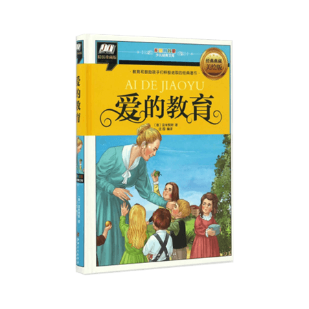

本站推荐

威廉·西尔斯博士是美国最具影响力的育儿权威。他的《西尔斯亲密育儿百科》出版近20年来畅销不衰，至今仍高居美国各大书店育儿类图书销售排行榜榜首，美国妈妈几乎人手一本。 西尔斯博士根据近40年的儿科临床实践，以及与妻子玛莎共同养育8个子女的经验，结合发展心理学的“亲密理论”，总结出了一套“亲密育儿法”。即通过母乳喂养、与宝宝同睡、用背巾背着宝宝、及时回应宝宝需求等方式，使父母与幼儿及早建立亲密关系，让孩子在充满关爱的环境里长大。 本书是《西尔斯亲密育儿百科》的最新定本。

《如何爱孩子》共两部、四个主题章节：家庭中的孩子、收容所、夏令营和孤儿之家中的孩子。
无论是在家庭，还是在收容所、夏令营、孤儿之家，我们可以看到科扎克的教养观察，以及他与孩子周旋的点滴。此书一开始就是一连串的自我对话激荡，字句非常平白浅显，却渗透出好多带有深远哲理的教育宏观思维。
“没有孩子，只有人”，不管是在其有限的生命里还是现在，科扎克都正在表达着成人如何去爱，去理解和尊重儿童
在他所有的著作中，《如何爱孩子》是他的儿童教育理念的基石。这本书能为所有的父母，把儿童教育当成职业或使命的人，比如，儿童教育者、社会工作者提供帮助，堪称具有全球性和永恒性的教育经典。
无论是在家庭，还是在收容所、夏令营、孤儿之家，我们可以看到科扎克的教养观察，以及他与孩子周旋的点滴。此书一开始就是一连串的自我对话激荡，字句非常平白浅显，却渗透出好多带有深远哲理的教育宏观思维。
“没有孩子，只有人”，不管是在其有限的生命里还是现在，科扎克都正在表达着成人如何去爱，去理解和尊重儿童
在他所有的著作中，《如何爱孩子》是他的儿童教育理念的基石。这本书能为所有的父母，把儿童教育当成职业或使命的人，比如，儿童教育者、社会工作者提供帮助，堪称具有全球性和永恒性的教育经典。

畅销美国500多万册的教子经典，以31种语言畅销全世界，彻底改变父母与孩子沟通方式的巨著。
如果说在父母与孩子的教育方面有什么经典著作的话，那么，首屈一指的就是吉诺特博士的这本著作——它彻底改变了父母与孩子的沟通方式，在这个领域，这是一本革命性的著作。父母可以帮助孩子可为一个品质高洁的人，一个有着怜悯心，敢于承担和义务的人，一个有勇气、充满活力、正直的人。光有爱是不够的，洞察力也不足以胜任，好的父母需要技巧，如何获得并使用这些技巧就是这本书的主要内容。
如果说在父母与孩子的教育方面有什么经典著作的话，那么，首屈一指的就是吉诺特博士的这本著作——它彻底改变了父母与孩子的沟通方式，在这个领域，这是一本革命性的著作。父母可以帮助孩子可为一个品质高洁的人，一个有着怜悯心，敢于承担和义务的人，一个有勇气、充满活力、正直的人。光有爱是不够的，洞察力也不足以胜任，好的父母需要技巧，如何获得并使用这些技巧就是这本书的主要内容。

《教育与美好生活》这部教育名著篇幅不长，除一个简短的引言之外，总共十九章，分三篇。该书的前两章构成了第一篇，综论现代教育的基本原理和目的。民主可以说是罗素教育思想的一条门槛式原则，他开宗明义地提出“我们所追求的未来的教育体制必须给每个孩子提供现有的最佳机会”，“如果一种教育方法不可能普及，我们就无法将其视为令人满意的”。正是基于这种精神，他对传统的教育理论、英国贵族式的传统教育特别是公学制度多有反思和批评，希望采用蒙台梭利等现代教育家摸索出的理论和方法破旧立新。

莉迪亚是家中老二，李先生和李太太的掌上明珠，她遗传了母亲的蓝眼睛和父亲的黑头发。父母深信，莉迪亚一定能实现他们无法实现的梦想。莉迪亚的尸体被发现后，她的父亲内疚不已，母亲则一心报复。莉迪亚的哥哥觉得，隔壁的坏小子铁定脱不了关系，只有莉迪亚的妹妹看得一清二楚，而且，她很可能是唯一知道真相的人……
《无声告白》是伍绮诗耗时六年写就的长篇处女作，故事编排精妙细致，文笔沉稳内敛，一经出版便广受好评，成为2014年度极具实力且众望所归的黑马，荣获2014美国年度图书桂冠。
《无声告白》是伍绮诗耗时六年写就的长篇处女作，故事编排精妙细致，文笔沉稳内敛，一经出版便广受好评，成为2014年度极具实力且众望所归的黑马，荣获2014美国年度图书桂冠。

不健康的家庭体系，就像高速公路上的连环追尾，其恶劣影响会代代相传！
这是一部振聋发聩的家庭心理疗伤经典之作。苏珊·福沃德博士通过工作中接触到的大量真实素材，分析了不健康的原生家庭是如何伤害子女，并特续影响子女成年后的生活的。
难能可贵的是，作者的主旨并不在于控诉这样的父母，而在于传授具体的对策，使那些受过或仍在承受父母伤害的人们获得勇气和力量，从与父母的负面关系模式中解脱，恢复自信和力量，得到自由和幸福。
这是一部振聋发聩的家庭心理疗伤经典之作。苏珊·福沃德博士通过工作中接触到的大量真实素材，分析了不健康的原生家庭是如何伤害子女，并特续影响子女成年后的生活的。
难能可贵的是，作者的主旨并不在于控诉这样的父母，而在于传授具体的对策，使那些受过或仍在承受父母伤害的人们获得勇气和力量，从与父母的负面关系模式中解脱，恢复自信和力量，得到自由和幸福。

人们只看到我的与众不同：一个十七岁前从未踏入教室的大山女孩，却戴上一顶学历的高帽，熠熠生辉。只有我知道自己的真面目：我来自一个极少有人能想象的家庭。我的童年由垃圾场的废铜烂铁铸成，那里没有读书声，只有起重机的轰鸣。不上学，不就医，是父亲要我们坚持的忠诚与真理。父亲不允许我们拥有自己的声音，我们的意志是他眼中的恶魔。哈佛大学，剑桥大学，哲学硕士，历史博士……我知道，像我这样从垃圾堆里爬出来的无知女孩，能取得如今的成就，应当感激涕零才对。但我丝毫提不起热情。我曾怯懦、崩溃、自我怀疑，内心里有什么东西腐烂了，恶臭熏天。直到我逃离大山，打开另一个世界。那是教育给我的新世界，那是我生命的无限可能。

来自意大利的四年级小学生恩里科，在十月的一个清晨开始了自己的新学年。在这一年的学校生活中，恩里科经历了许多有趣的或感人的小故事，在朋友的陪伴、老师的教导与父母的关爱下，他逐渐懂得了“爱”的奥义……
全书以一个以孩子的口吻、孩子的笔触、孩子的眼光来写,以日记的形式，记录了从开学到一学年结束共10个月里，所发生的各式各样的小故事，父母在他日记本上写的劝诫启发性的文章，以及10则老师在课堂上宣读的“每月故事”。
全书以一个以孩子的口吻、孩子的笔触、孩子的眼光来写,以日记的形式，记录了从开学到一学年结束共10个月里，所发生的各式各样的小故事，父母在他日记本上写的劝诫启发性的文章，以及10则老师在课堂上宣读的“每月故事”。